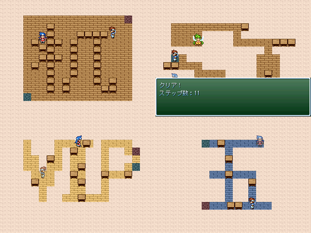

No.39-アレックスとリリアと机のパズル

■アレックスとリリアと机のパズル んうでぃーね
紹介文
初投稿だから当たり障りのない倉庫番風パズルゲーを作るよ！ シンプルルールでサクッとできるから他の祭り作品の間の息抜きにちょうどいいね！ アレックスとリリアの２人を操作して、 机を押したりしながら目的の場所へ進む倉庫番的なパズル。 アレックスとリリアで机の押し方のルールが違います。 それ以外のギミックは一切なしのシンプルゲー。 追伸 全３０ステージになりました。 パズルゲーなのでプレイ時間はまちまちですが 真面目に全ステージやると２～３時間くらいかかるかもしれません。
管理人から一言: 倉庫番でもプレイキャラが二人もいると 仕掛けとかいろいろあって面白いことになりそうだ。
© VIPRPG